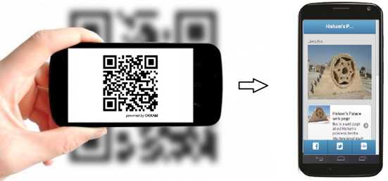

Help your country to preserve its history and culture..

The aim of this project is to investigate and apply existing augmented reality tools for different heritage sites in Palestine. Palestine is characterized with its long spanning history, covering diverse cultures and architectural remains. Many of the remaining heritage sites are partially or completely destroyed for many reasons. However, archaeologists were able to plot anticipated sketches of the original shapes of many of these sites. A great example is the Hisham Palace (قصر هشام). The project has important applications at different domains, the foremost important applications is for touristic guides and movies, whether through portable mobile applications or large screens at the heritage sites.
This project aims at building a geo-tagged dataset of multimedia objects (audio, video, webpages, etc.) about cultural sites in Palestine including their GIS coordinates; and then develop a smart turist guide (using the dataset) on a mobile application and using QR code technology. such that, when a turest scans a QR code, the app quickly offers relevant information about the site. For example, when scanning the QR code, the app will play a short audio file about that site, shows "around me", among other functionalities
Remarks:
See other Project Proposals: